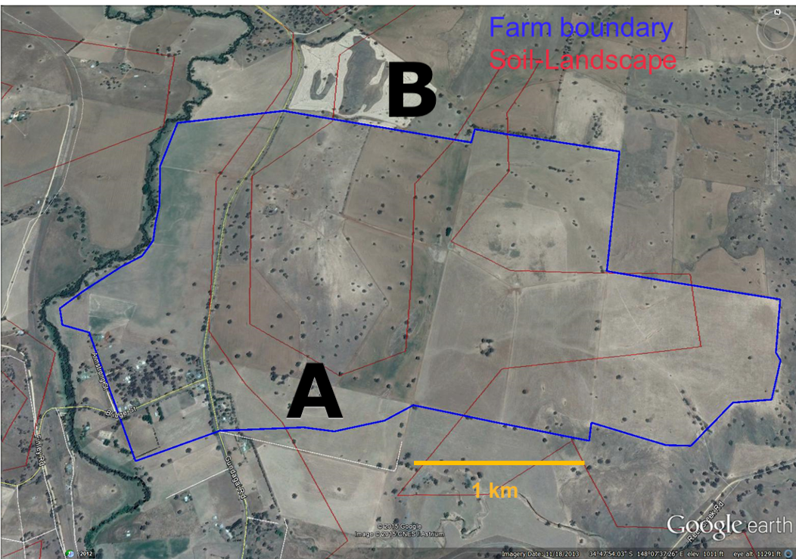
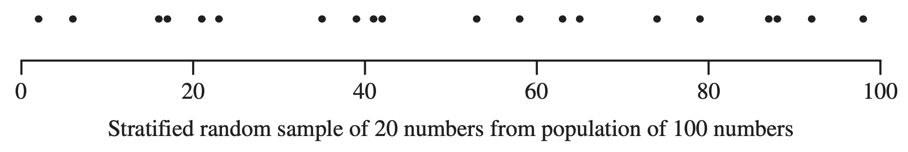

landA <- c(90, 78, 86, 71) # stratum A samples
landB <- c(48, 56, 42) # stratum B samplesLecture 02b – Sampling designs II
ENVX2001 Applied Statistical Methods
In the last lecture…
Simple random sampling

Each unit has an equal chance of being selected.
Not always the case, but still a good technique.
Simple random sampling
Each unit has an equal chance of being selected.
Not always the case, but still a good technique.
But what if we have more information about the population?
Soil carbon

Different land types
- Land type A covers 62% of the area, and land type B covers 38%.
- Type A has a higher chance of being selected if we use simple random sampling.
- Can we use this information to our advantage?
Simple Stratified random sampling
Stratified random sampling
3 steps
- Divide the population into homogeneous subgroups (strata).
- Sample from each stratum using simple random sampling.
- Pool (or combine) the estimates from each stratum to get an overall population estimate.
Strata rules
Strata are…
- Mutually exclusive and collectively exhaustive; i.e. units must all belong to a stratum and only to one stratum (no unit should be unassigned).
- Homogeneous – units within a stratum are similar to each other and distinct from units in other strata.
- Sampled irrespective of size – the point is to ensure that each stratum is represented in the final sample.

Identifying strata
Acceptable
Age groups or income brackets – these are mutually exclusive and homogeneous.
Might not work…
Nationality or food preference – these may not be mutually exclusive e.g. a person can have multiple nationalities, or animals can have multiple food preferences.
Advantages
We address:
- Bias. Each stratum is sampled, so the sample is representative of the population.
- Accuracy. Each stratum is represented by a minimum number of sampling units.
- Insight. We can compare strata and make inferences about the population.
Does this make simple random sampling obsolete?
- No. Still a good technique.
- With large enough samples, the two methods will converge.
- Chance of not selecting a unit from a stratum is always there, but reduces as the sample size increases.
Stratified random sampling: estimates
Everything is the same, but…
Weighted estimates
- We need to “weigh” the estimates from each stratum to account for the different stratum sizes and inclusion probabilities.
- Most of the time, we use the stratum size as the weight to calculate weighted estimates.
- The overall population estimate is the sum of the weighted estimates from each stratum, i.e. we pool the individual strata information into a single, overall population estimate.
Example
- A forest contains two types of trees: A and B, with 60% and 40% of the population, respectively.
- We want to estimate the mean height of the trees.
- Take 10 height measurements, of which 7 are randomly selected from type A and 3 are randomly selected from type B.
- The pooled estimate for the mean height of the trees is: \[0.6 \times \text{average height of A} + 0.4 \times \text{average height of B}\]
Data story: soil carbon
Soil carbon
Data story
Soil carbon content was measured at 7 locations across the area. The amount at each location was 48, 56, 90, 78, 86, 71, 42 tonnes per hectare (t/ha).
Different land types
- Land type A covers 62% of the area, and land type B covers 38%.
- Type A has a higher chance of being selected if we use simple random sampling.
- Can we use this information to our advantage?
In R
Suppose we know the land type for each location sampled. We can use this information to sample the data from each land type according to stratum size.
(Coincidentally the sampling effort and data are the same as the simple random sampling example from the previous lecture.)
95 % Confidence interval
The formula
\[95\%\ CI = \bar y_{s} \pm t^{0.025}_{n-L} \times SE(\bar y_{s})\]
where \(L\) is the number of strata, \(n\) is the total number of samples, and \(\bar y_{s}\) is the weighted mean of the strata.
Therefore:
- \(\bar y_{s}\) is the pooled mean.
- \(t^{0.025}_{n-L}\) is the \(t\)-value for a 95% confidence interval with \(n-L\) degrees of freedom.
- \(SE(\bar y_{s})\) is the pooled standard error of the mean.
Pooled mean \(\bar y_{s}\)
Sum of the weighted estimates of mean, from each stratum.
\[\bar{y}_{s} = \sum_{i=1}^L \bar{y}_i \times w_i\]
where \(L\) is the number of strata, \(\bar{y}_i\) is the mean of stratum \(i\), and \(w_i\) is the weight for stratum \(i\).
We first define the weights \(w_i\) for each stratum:
weight <- c(0.62, 0.38)Then we calculate the weighted mean by multiplying the mean of each stratum by the weight and summing the results:
weighted_mean <- mean(landA) * weight[1] + mean(landB) * weight[2]
weighted_mean[1] 68.86833Pooled standard error of the mean \(SE(\bar y_{s})\)
Square root of the sum of the weight-adjusted variances of the mean per stratum, assuming the strata are independent (see next slide).
\[Var(\bar y_{s}) = \sum_{i=1}^L w_i^2 \times Var(\bar y_i)\] \[SE(\bar y_{s}) = \sqrt{Var(\bar y_{s})}\]
where \(L\) is the number of strata, \(w_i\) is the weight for stratum \(i\), and \(Var(\bar y_i)\) is the variance of the mean for stratum \(i\).
In R
varA <- var(landA) / length(landA)
varB <- var(landB) / length(landB)
weighted_var <- weight[1]^2 * varA + weight[2]^2 * varB
weighted_se <- sqrt(weighted_var)
weighted_se[1] 3.041995Pooled standard error of the mean \(SE(\bar y_{s})\)
Why is weight \(w\) squared?
Variance is standard deviation squared, therefore the weight is naturally squared when calculating the variance of the weighted mean. We just don’t see it unless we expand the variance formula i.e. “it’s a math thing”.
Can we really add variances?
Yes, if sampling units are all independent, which should be the case for a well-designed stratified random sampling since units are mutually exclusive and collectively exhaustive.
The addition or subtraction of variances include a covariance term if the strata are not independent:
\[ Var(\bar y_{s}) = \sum_{i=1}^L w_i^2 \times Var(\bar y_i) + 2 \times \sum_{i=1}^L \sum_{j=1}^L w_i \times w_j \times Cov(\bar y_i, \bar y_j)\]

\(t\)-critical value
Degrees of freedom \(df\)
\[df = n - L\]
where \(n\) is the total number of samples and \(L\) is the number of strata.
- Suppose we want to assign 12 samples to 3 strata.
- The degrees of freedom is \(12 - 3 = 9\).
- Think of it this way: of all the 12 samples, we can assign at least 9 units freely into any stratum, but the last 3 must be in each of the 3 strata.
In R
df <- length(landA) + length(landB) - 2
t_crit <- qt(0.975, df)
t_crit[1] 2.57058295 % Confidence interval
Putting it all together
ci <- c(
L95 = weighted_mean - t_crit * weighted_se,
u95 = weighted_mean + t_crit * weighted_se
)
ci L95 u95
61.04864 76.68803 Comparison
Simple random vs. stratified random sampling
What if we had use stratified random sampling instead of simple random sampling (and collected the same amount of data)?
What differences can you see?
Code
library(tidyverse)── Attaching core tidyverse packages ──────────────────────── tidyverse 2.0.0 ──
✔ dplyr 1.1.4 ✔ readr 2.1.5
✔ forcats 1.0.0 ✔ stringr 1.5.1
✔ ggplot2 3.5.1 ✔ tibble 3.2.1
✔ lubridate 1.9.4 ✔ tidyr 1.3.1
✔ purrr 1.0.4
── Conflicts ────────────────────────────────────────── tidyverse_conflicts() ──
✖ dplyr::filter() masks stats::filter()
✖ dplyr::lag() masks stats::lag()
ℹ Use the conflicted package (<http://conflicted.r-lib.org/>) to force all conflicts to become errorsCode
# Manually printing the results below as SRS data is in previous lecture
compare <- tibble(
Design = c("Simple Random", "Stratified Random"),
Mean = c(67.29, 68.9),
`Var (mean)` = c(50.83, 9.30),
L95 = c(49.85, 61),
U95 = c(84.73, 76.7),
df = c(6, 5))
knitr::kable(compare)| Design | Mean | Var (mean) | L95 | U95 | df |
|---|---|---|---|---|---|
| Simple Random | 67.29 | 50.83 | 49.85 | 84.73 | 6 |
| Stratified Random | 68.90 | 9.30 | 61.00 | 76.70 | 5 |
- Differences in mean, variance of the mean and 95% CI?
- Which method is more precise?
- Can simple random sampling be as precise as stratified random sampling?
Efficiency
- Calculated as a ratio: \[\text{Efficiency} = \frac{\text{Variance of SRS}}{\text{Variance of Stratified}}\]
- Indicates sampling effort required to achieve precision of stratified sampling.
- Efficiency > 1 means stratified sampling is more efficient.
- Value tells us how much we need to increase the sample size in SRS to achieve the same precision as stratified sampling.
In R
efficiency <- 50.83 / 9.30
efficiency[1] 5.465591How many samples would we have had to collect in SRS, to achieve the same precision as stratified sampling?
round(7 * efficiency, 0)[1] 38Tips on implementation
- The most difficult part is to identify the strata and assign the sampling units to the strata.
- Strata sampling size: allocate samples to strata based on the size of the strata, either proportional to:
- the size of the strata, or
- the variance of the strata.
Monitoring
What if we come back and do another set of soil carbon measurements?
The change in mean \(\Delta \bar y\)
- Our interest now lies in the change in mean soil carbon content.
- We can still calculate the 95% confidence interval for the change in mean, but we need to account for the correlation between the two sets of measurements.
- A covariance problem that differs depending on the resampling design.
Monitoring estimates
Change in mean \(\Delta \bar y\)
The difference between the means of the two sets of measurements.
\[\Delta \bar y = \bar y_2 - \bar y_1\]
where \(\bar y_2\) and \(\bar y_1\) are the means of the second and first set of measurements, respectively.
Variance of the change in mean \(Var(\Delta{\bar y})\)
Sum of the variances of the two sets of measurements, minus twice the covariance between the two sets of measurements if the two sets are not independent. The covariance term is zero if the two sets are independent.
\[Var(\Delta{\bar y}) = Var(\bar y_2) + Var(\bar y_1) - 2 \times Cov(\bar y_2, \bar y_1)\]
Covariance?
If we revisit the same 7 sites
\[Var(\Delta{\bar y}) = Var(\bar y_2) + Var(\bar y_1) - 2 \times Cov(\bar y_2, \bar y_1)\]
- The measurements are not independent, as anything that affects the first set of measurements will also affect the second set (unknown to us).
- Covariance exists between the two sets of measurements.
- We need to account for this in the variance of the change in mean.
- Equivalent to a paired t-test.
If we visit 7 randomly-selected sites
\[Var(\Delta{\bar y}) = Var(\bar y_2) + Var(\bar y_1)\]
- The measurements are independent.
- Covariance is zero.
- Equivalent to a two-sample t-test.
Calculating the 95% CI for the change in mean
\[95\%\ CI = \Delta \bar y \pm t^{0.025}_{n-1} \times SE(\Delta \bar y)\]
where \(n\) is the number of pairs of measurements, and \(SE(\Delta \bar y)\) is the standard error of the change in mean.
\(SE(\Delta \bar y)\)
If the covariance term is needed, we calculate covariance as:
\[Cov(\bar y_2, \bar y_1) = \frac{\sum_{i=1}^n (y_{2i} - \bar y_2) \times (y_{1i} - \bar y_1)}{n-1}\]
where \(n\) is the number of pairs of measurements, and \(y_{2i}\) and \(y_{1i}\) are the measurements from the second and first set, respectively.
The sum of the product of the differences between each pair of measurements and the mean of each set, divided by \(n-1\).
Luckily, you are not expected to calculate this by hand. R will do it for you either by using the cov() function (if calculating manually), or by using the t.test() function with the paired argument set to TRUE. We will go through this in the lab!
Thanks!
Questions?
This presentation is based on the SOLES Quarto reveal.js template and is licensed under a Creative Commons Attribution 4.0 International License.